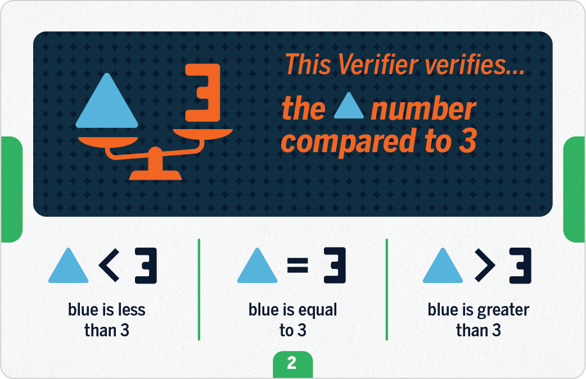
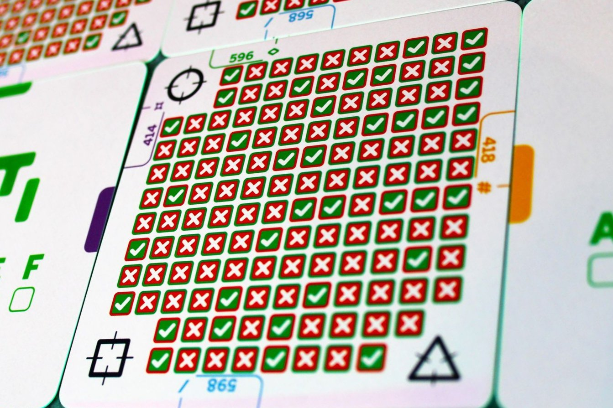
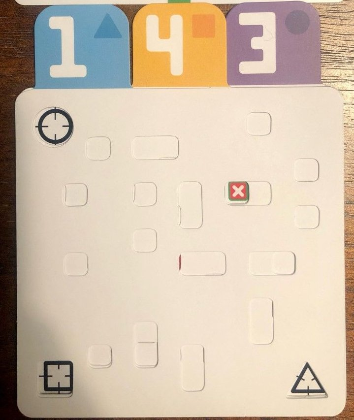

I recently found a copy of a Turing Machine game under a Christmas tree.
While not related to the actual Turing machine, it’s a cool game with some interesting mathematical properties.
In this post, I describe and analyze the game.
Rules
Turing Machine is a game for any number of players, where each of them
tries to solve a puzzle in the least number of moves. In some sense, it’s similar to Mastermind
but with a level of indirection that makes the rules more difficult to explain.
Let me do my best here:
The goal of the game is to find a three-digit code (with digits \(1, \ldots, 5\), i.e. \(5^3 = 125\) possibilities)
The code is described by a number of predicates that it satisfies, like “there is only one 3 in the code” or “the sum of the digits is even”.
The players see a number of verifier cards, each describing a couple of possible properties, and a corresponding verifier, that checks one, unknown to the players, property from the relevant verifier card.


Left: a verifier card, right: a verifier.
All of the verifiers accept the final code.
At each round of the game, the players choose a code
(any of the 125 possible ones), and a verifier card, and check if the corresponding verifier accepts the code.
This information helps to figure out which property from the given verifier card is checked by the verifier. In turn, this allows players to deduce the final code.
The game is won by a player who guessed the code after the least number of rounds.
Example game
To visualize the game better, let’s consider an example game with only a single digit 1,…, 5, and two verifiers with the following verifier cards:
Verifier 1 verifies, whether the digit:- is at most 2, or- is at most 4, or- is larger than 4.
Verifier 2 verifies, whether the digit:- is even, or- is odd, or
In the game, a player may try a code of 5 and test it on the verifier 1. If the verifier says no, the player
knows that the verifier does not check the is larger than 4 property (as otherwise, the verifier would said yes on the 5 code).
In the next round, the player may choose a code of 4, and check it on verifier 2, to get a no answer again,
meaning that verifier 2 verifies is odd property (as it’s the only property left after we eliminated is even).
In the following round, the player may ask the verifier 1 on the code 3 and receive a no again, meaning that
the first verifier checks the property is at most 2. Knowing the two properties, the player
can now deduce that the code to find was 1 (the only odd number at most 2).
Physical elements
How does a verifier check a given property, without revealing to the players which property it verifies?
Physically, the verifier consists of a card with 125 ticks and checkmarks, corresponding to whether each of the possible codes satisfies a given property or not.
To test a given code on a verifier, players stack cards corresponding to the three digits on top of each other.
These cards have holes carved in intricate patterns, such that after stacking three of them together, one hole will
stay uncovered, allowing the player to see the outcome of the test on the verifier card.

Presentation of the 3-digit code applied on the verifier card.
The patterns on the digit and verifiers are created in an unpredictable way, making it difficult to read the property from the verifier using the checkmarks alone.
Assumptions
Apart from the base rules above, there are two additional assumptions that a valid game is bound to satisfy.
Assumption 1:
There is only one code that satisfies all of the verifiers.
Thanks to this assumption, there is always only a single solution to a game.
Assumption 2:
No verifier is redundant,i.e. the game would not be solvable after removing any of the verifiers.
This assumption ensures that the game is presented to the players in the most reduced form,
without extra “fluff” verifiers.
These assumptions can also be used by the players to help them to deduce the final code.
Let’s return to the example game above, and make the following observations:
Observation 1
Verifier 1 cannot check is larger than 4 property, as if this was the case, there would only be a single code satisfying it (5), and the second verifier would be redundant; that would break the Assumption 2.
Observation 2
Verifier 1 cannot check is at most 4 property. If this were the case, for each of the properties (even/odd) that verifier 2 is checking, there would still be two of them (either 1 and 3 or 2 and 4), which invalidates Assumption 1.
This means that in the game above, we can deduce the property that verifier 1 checks (is at most 2) without ever querying it, and the whole game can be solved with a single test on verifier 2.
Note that this doesn’t break Assumption 2: if we removed verifier 1, the game would not be solvable.
Let’s call admissible a code such that if it was a solution for a given game, these two Assumptions would be satisfied.
In the example game above, codes 1 and 2 are admissible.
Game theory
Apart from trying to beat fellow human players in the game, there’s an interesting question of what is the minimum number of moves a perfect player may need to solve a given game.
A careless guess might be \(log_2(5^3) = 3\cdot \log_2(5) \approx 7\), as we get a single bit of information for each
of the tests. This would hold if the remaining number of codes to check for the verifier answering yes or no were always equal.
One may consider a verifier to be splitting the set of possible codes into two groups: the ones that it answers yes to, and the ones it gives a no answer to.
There might be verifiers that do this in an asymmetric way, e.g.
This verifier verifies, whether the code:- is exactly 135, or- is not 135
When a player queries such a verifier, in the worst case it will only allow them to exclude a single code (and not half of them) from being considered.
On the other hand, many of the codes either don’t correspond to any set of available verifiers or share the set of properties verified by the verifiers with other codes (making them invalid due to Assumption 1).
Let’s prove that \(\sum_i (m_i - 1)\) is an upper bound on the number of rounds, where \(m_i\) is the number of properties written on the i-th verifier card.
Proof
One can make \(m_i - 1\) tests on the i-th verifier to learn its property in the following way:
we start with \(m_i\) “candidate” properties
until there is only a single property left, we:
choose any two properties \(A\), \(B\) from the set
choose a code that distinguishes them, ie. that satisfies property \(A\) but doesn’t satisfy \(B\) or vice versa.
the answer allows us to either remove property \(A\) or \(B\) from the set of candidate properties.
Note that such a code always exists for any pair of properties that are not exactly the same.
Min-max view
Now, let’s consider a single-player game of Turing Machine as a two-player game, where the player tries to minimize the number of rounds, and their opponent, the Oracle, maximizes it.
The move available to the player is to choose a code and a verifier to check it, whereas the oracle can choose the answer of the verifier.
The game starts with the set \(S\) of all admissible codes. One can prove that \(log_2 (|S|)\) is a lower bound on the number of rounds.
Proof
For a single player move, let’s call the code that she chooses \(C\).
The properties written on the chosen verifier card can be divided into two sets:
- \(P\) that code \(C\) would satisfy, and
- \(Q\) that it wouldn’t.
For example, 2 satisfies is at most 2 and is at most 4 but not is larger than 4 in the example game.
Now, the Oracle can decide on the answer to the verifier check.
If it chooses yes, the player can disregard the codes from \(S\) that don’t satisfy any property from \(P\): we know that the verifier checks one of the properties from \(P\), so if a code from \(S\) doesn’t satisfy any of them, it cannot be the final answer.
Vice versa, if the verifier’s answer was no, the codes that don’t satisfy any property from \(Q\) can be removed from consideration, as the verifier checks one of these properties.
These two sets – of codes that would get removed in either case – are disjoint: there is no code in \(S\) that satisfies neither property from \(P\) nor neither from \(Q\): this would mean that it satisfies no property written on a given verifier card which stands in contradiction in it being admissible.
The game, expressed like this, consists of removing the codes from \(S\) until only one code remains.
At every turn, there are two options for the Oracle on which codes to remove: assuming it always chooses the one that’s bigger or equal, the set \(S\) will decrease at most by half in every turn, leading to the \(log_2(|S|)\) lower bound.
In most of the games from the Turing Machine instruction, this lower bound is achievable. It doesn’t always have to be1:
it is possible that the best query a player can make divides the admissable codes into two unbalanced sets and the Oracle can choose the smaller one to increase the number of rounds.
Implementing a solver
To get an accurate estimate of the minimum number of rounds, I implemented a simple solver (searching the min-max tree exhaustively) in this repo.
For example, game 14 has 8 admissible codes, but can only be solved in 4 rounds.↩︎